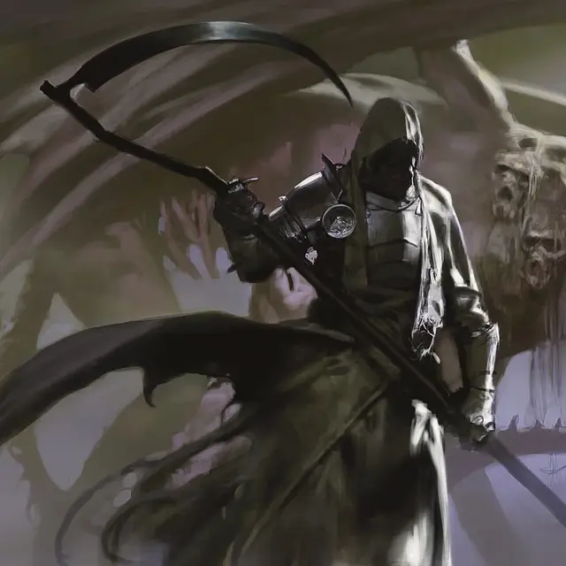

Призрак ночи
Specter of Night
Огромная Нежить, нейтрально-злая

Класс Доспеха 15 (природный доспех)
Хиты 142 (15к12 + 45)
Скорость 60 футов, летая 60 футов
| мод | спас | ||
|---|---|---|---|
| СИЛ | 22 | +6 | +6 |
| ЛОВ | 18 | +4 | +8 |
| ТЕЛ | 17 | +3 | +3 |
| мод | спас | ||
|---|---|---|---|
| ИНТ | 12 | +1 | +1 |
| МДР | 13 | +1 | +5 |
| ХАР | 12 | +1 | +1 |
Навыки Восприятие +5
Сопротивление урону некротическая энергия
Иммунитет к урону яд
Иммунитет к состояниям истощение, отравление
Чувства тёмное зрение 120 футов, пассивное Восприятие 15
Языки понимает Общий, но не может говорить
Опасность 12 (8400 опыта)
Бонус мастерства +4
Особенности
Легендарное сопротивление (3/день). Если призрак проваливает спасбросок, вместо этого он может выбрать успех.
Сопротивление магии. Призрак совершает с преимуществом спасброски от заклинаний и других магических эффектов.
Действия
Мультиатака. Призрак использует Скорбное расчленение, если доступно, затем совершает одну атаку Копытами и одну атаку Косой жатвы.
Копыта. . Рукопашная атака оружием: +10 к попаданию, досягаемость 10 фт., одна цель. Попадание: 16 (3к6 + 6) дробящего урона плюс 28 (8к6) урон некротической энергией. Если цель — существо Среднего размера или меньше, она должна преуспеть в спасброске Силы Сл 18, иначе упадёт ничком.
Коса жатвы. Рукопашная атака оружием: +10 к попаданию, досягаемость 10 фт., одна цель. Попадание: 12 (1к12 + 6) рубящего урона плюс 28 (8к6) урона некротической энергией. Если цель — существо, она должна преуспеть в спасброске Телосложения Сл 15, иначе она получит одну степень истощения.
Скорбное расчленение (перезарядка 6). Призрак издает пронзительный вой, взывая к тем, кто близок к смерти. Каждое существо, не являющееся нежитью, в пределах 120 футов от призрака должно совершить спасбросок Телосложения Сл 15. При провале существо слышит вой и обречено на смерть.
Существо, отмеченное смертью, не может восстанавливать хиты, с помехой совершает спасброски от смерти, и все броски атаки против него совершаются с преимуществом. Этот эффект длится 1 минуту или до тех пор, пока существо не станет целью заклинания снятие проклятия [remove curse] или аналогичной магии.
Описание
Подобно темным зеркалам архонтов Элдраина (см. архонт границ [archon of Boundaries]), призраки выглядят как скрытые фигуры, восседающие на ужасающих летающих зверях. Легко смотреть на призрака и представлять себе всадника, командующего скакуном, но на самом деле все наоборот; Летающий ужас — это монстр-нежить, который рыскает по дебрям в поисках трупа рыцаря. Найдя его, ужас связывает свою сущность с мертвым телом, придавая трупу подобие жизни всадника. Эти двое действуют как единое существо, более могущественное из-за своего неестественного союза.
Люди Элдраина считают призраков вестниками смерти. Говорят, что призраки издают пронзительный вопль, скорбный, превосходящий все остальные звуки, и слышимый только тем, кто вот-вот умрет.